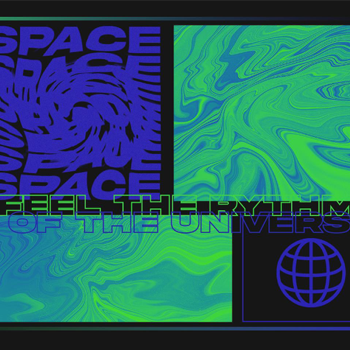
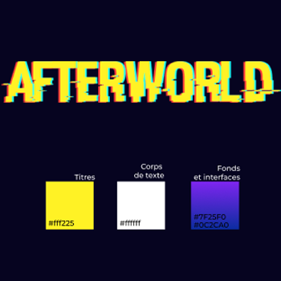
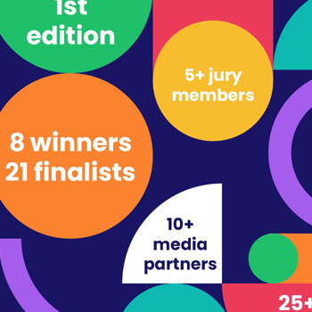
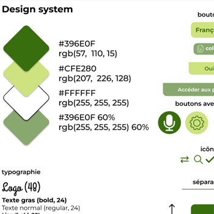
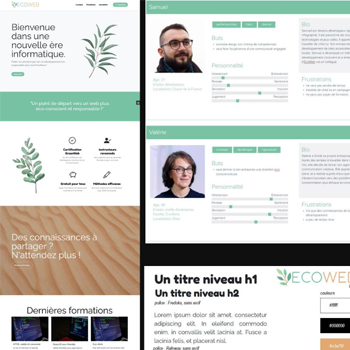
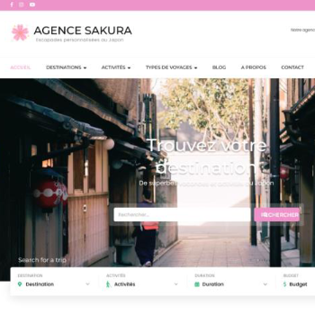
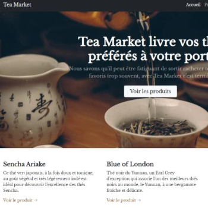
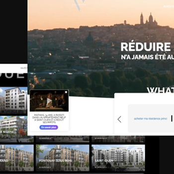

Projet grille et typographie
Visuel réalisé pour le cours grille et typo, le but était de réaliser une composition à partir d'une police choisie et en gardant en tête le concept de grille. J'ai choisi la police Akira Expanded.

Afterworld
Projet en duo pour le cours de culture graphique. Réalisation d'un moodboard basé sur un produit fictif imaginé librement en groupe à partir d'un kickstarter (chaussures VR captant les mouvements). Nous avons imaginé un jeu vidéo de combat se passant dans un monde dystopique cyberpunk. Choix de couleurs, police, imagination d'un logo.

Autonomy Paris
Brief de candidature pour une alternance chez Autonomy Paris. Au choix entre deux sujets, le but était de réaliser entre 3 et 5 visuels type slider pour les réseaux sociaux. Il fallait présenter l'événement des Mobility Awards et donner envie de participer. Charte graphique donnée.

Anitalk
Projet de cours d'UX/UI, adaptation d'une application déjà existante à un public spécifique : ici Google Traduction pour les animaux. Réalisation d'une charte graphique, d'un design system, wireframes et maquette fonctionnelle. Présentation orale sur le mode jeu de rôle questions réponses client.

Ecoweb
Projet de fin d'études, application d'apprentissage en ligne autour du développement éco-responsable permettant de publier et consulter des cours et disposant d'une interface d'administration. Gestion de compte, des formations et des cours, réalisation d'une charte graphique et de personas, diagrammes de classe et cas d'utilisation, production de livrables (manuel, etc). Présenté à l'oral pour l'obtention de mon titre développeur web et web mobile.

Agence Sakura
Projet de site Wordpress pour une agence de voyages fictive. Gestion de voyages, réservations, blog. Utilisation d'un plugin de traduction et d'Elementor free.

Tea market
Projet de site ecommerce de vente de thé avec Symfony et une interface EasyAdmin. Gestion de compte utilisateur, adresses postales, panier, paiement avec Stripe.

Valorem Investissements
Mise à jour, actualisation et maintenance du site de gestion de patrimoine de Valorem Investissements pendant mon alternance chez eux. Wordpress avec Divi builder.